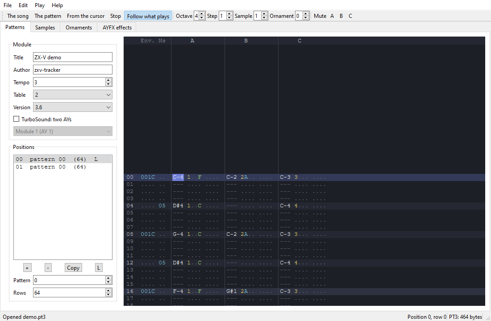

Native programs (SDK)
A native program (.zxv) is a program written in C or in RISC-V
assembly and compiled for the machine's own processor. It runs at full
speed, has the whole machine to itself and can do everything BASIC does and
more: games with dozens of sprites, digitised sound, your own file formats.
This guide takes you from installing the tools to distributing a finished program. The complete list of functions, constants and formats is in the API reference, and the graphics engine has its own page: Graphics.
Contents
- Native programs or BASIC?
- Installing the tools
- Building and running the examples
- Your first program
- How a program works
- The screen, colours and text
- Graphics: drawing, sprites and tile maps
- Sound
- Keyboard, joystick and mouse
- Files on the SD card
- Timing and the frame loop
- Writing in assembly
- Debugging
- Distributing your program
Native programs or BASIC?
Use BASIC when you want to try ideas quickly, learn, or write programs that are mostly text, menus or simple games. BASIC on ZX-V already has sprites, tile maps, sound and files, and you change a line and run it again in a second.
Use a native program when you need:
- Speed. C runs many times faster than BASIC: the CPU does about 2.4 million instructions per frame (60 frames per second).
- Control. Your own data structures, fixed-point maths, your own sound engine, your own file formats.
- Size. Up to almost 248 KB for code and data, with all the memory of the machine at your disposal while the program runs.
The price is that you write in C on your computer, compile, and then load the result into the machine or the emulator. Many people do both: they try an idea in BASIC and then write the finished game in C.
There is a third way: compiling BASIC with ZX Basic,
which turns a BASIC program into a .zxv about 90 times faster than in the
machine's BASIC.
If you know the Spectrum: a .zxv is like a machine code program
loaded with LOAD "" CODE and started with RANDOMIZE USR, but in C, with a
32-bit processor and a library of system routines you call like normal C
functions.
Installing the tools
You need three things:
- A GCC cross-compiler for RISC-V (
riscv64-unknown-elf-gcc). Despite the "64" in its name, it also builds the 32-bit code ZX-V uses. - Python 3, for the tools that turn the compiled program into a
.zxvand convert images. - The SDK itself: the
sdkfolder of the ZX-V repository. Clone or download the repository; the commands in this guide are run from its top folder.
Optionally:
- picolibc, the standard C library for small machines, if you want
printf,fopen,mallocand friends (see Two ways to write C). - GDB for RISC-V, to debug with breakpoints (see Debugging).
- The emulator to run your programs on your computer (see
The emulator). The
zxv-cliversion without a window is handy for quick, automatic tests.
Linux (Debian, Ubuntu)
sudo apt install gcc-riscv64-unknown-elf picolibc-riscv64-unknown-elf python3 make
# optional, for debugging:
sudo apt install gdb-multiarch
These are the packages the project's own automatic builds use on Ubuntu 24.04.
Windows
Install MSYS2 and, in its UCRT64 terminal:
pacman -S mingw-w64-ucrt-x86_64-riscv64-unknown-elf-toolchain \
mingw-w64-ucrt-x86_64-python make
# optional, for debugging:
pacman -S mingw-w64-ucrt-x86_64-gdb-multiarch
Run the commands of this guide in that same terminal. MSYS2 has no picolibc
package, so on Windows you can build every example except files and
write programs without the standard C library (the usual case: all the
other examples, including the Estela game, work like that).
macOS
There is no tested recipe for macOS yet. Homebrew's riscv64-elf-gcc
package should work if it includes the 32-bit ilp32 libraries; its
commands start with riscv64-elf- instead of riscv64-unknown-elf-, so
build with make -C sdk CROSS=riscv64-elf-.
Checking the installation
riscv64-unknown-elf-gcc --version
python3 --version
Building and running the examples
From the top folder of the repository:
make -C sdk
This compiles every example in sdk/examples/ and leaves the programs in
sdk/build/: hello.zxv, graphics.zxv, estela.zxv, and so on (and next to
each one, the .elf file with the debugging information). Without
picolibc (MSYS2 on Windows does not have it), make says so and builds the
others, leaving out files.
| Example | What it shows |
|---|---|
hello |
The first steps: text through the system routines, drawing straight into video memory and a note on the sound chip |
graphics |
The graphics engine: a scrolling tile map, bouncing sprites that collide, a spinning polygon, and a rotating "mode 7" floor with scaled sprites, all double-buffered |
scroll |
Hardware scrolling over a 1024-pixel-wide field, drawing only the column that comes in, and parallax with the line table |
digital |
Digitised sound: 8 kHz samples played through the volume of a sound chip channel |
files |
The standard C library with the SD card: fopen, fprintf, fgets, opendir, malloc... (needs picolibc) |
boardtest |
The board test: OUT_INFO (output and screen), the clock, a file written and read back, the keyboard, gamepads and mouse live, the sound chip's two stereo channels and, with P, the palettes with the per-line table |
estela |
Estela, a complete shoot'em up: three stages, bosses, music and effects on both sound chips, keyboard and joystick, a high score on the card; its graphics (.gfx) and music (.pt3) can be changed without compiling (its README) |
route128 |
Route 128, a racing game: a pseudo-3D road with bends and blind crests, painted line by line, and the scenery and traffic as scaled sprites; three stages against the clock; its graphics (.gfx) and music (.pt3) can be changed without compiling (its README) |
mine |
The Mine, a digging game: boulders and diamonds that fall and roll, creatures that follow the walls, growing moss and twelve caves bigger than the screen, with smooth scrolling; the rules, kept apart, are also tested on the PC (its README) |
street |
Street Justice, a street brawler: fighters drawn with the engine from a skeleton in poses, depth, grabs, thugs that take turns to attack and a boss in each of the three stages (its README) |
umbra |
Umbra, a 3D maze in the dark: raycast walls, mode 7 floor and ceiling, lamp fog and shadows that chase you; its levels are maps in umbra.gfx |
keep |
The Keep, a top-down dungeon adventure: four floors of rooms, enemies, keys, treasures and a sorcerer; its floors are maps in keep.gfx, and the music and effects are editable files |
chess |
ZXV Chess, chess against the machine, with four levels, or for two players: all the FIDE rules except threefold repetition, the mouse, and the engine kept apart, which is also tested on the PC; the pieces are PNG images you can edit (its README) |
gonesilent |
Gone Silent, a 3D adventure: solid polygons with dithered shading drawn back to front, pixel-art sprites for the creatures and items (made by scripts and compressed at build time), two palettes through the line table, a motion tracker, a map and a saved game (its README) |
player |
Music and effects with the zxv_music.h library: a player for PT3, TurboSound, PT2, STC, ASC and PSG modules and AYFX effect banks, with the registers of both AY chips on screen |
gfxedit |
The graphics editor: sprites, tiles, maps and textures in .gfx files, with the mouse (in the graphics guide) |
To run one, the .zxv file has to be on the machine's SD card:
- In the desktop emulator (
zxv), open the file with File > Open (Alt+O) or drag it onto the window. The emulator offers to copy it to the card and loads it. - In any emulator or on the real machine, copy the
.zxvto the SD card (in the desktop emulator, the card is the folderZX-Vin your Documents) and type in BASIC:
LOAD "graphics"
The .zxv extension is optional. In the web version, upload the file with
File > The SD card first.
The examples are also built into the machine, on the ROM: drive:
LOAD "ROM:graphics" works on a new machine without copying anything.
Your first program
Create a folder for your program, next to the repository or anywhere you
like, and save this as hello.c:
#include "zxv_api.h"
int main(void)
{
zxv_cls(7); /* clear the screen to white */
zxv_print_str("Hello from C!\n");
zxv_print_str("Press a key to go back to BASIC.");
for (int x = 0; x < 256; x++) /* a red line across the screen */
zxv_plot(x, 100, 2);
while (zxv_key_get() < 0) /* wait for a key... */
zxv_wait_vblank(); /* ...one frame at a time */
return 0;
}
Compile it (change SDK to where the sdk folder is):
SDK=../ZX-V/sdk
riscv64-unknown-elf-gcc -march=rv32imac_zicsr_zifencei_zba_zbb_zbs_zbkb_zcb -mabi=ilp32 \
-Os -g -Wall -Wextra -std=gnu11 -ffreestanding -fno-builtin \
-fno-tree-loop-distribute-patterns -I$SDK/include \
-nostdlib -nostartfiles -static -T $SDK/zxv.ld -Wl,--gc-sections \
-Wl,--no-warn-rwx-segments \
$SDK/crt0.S $SDK/zxvlib.c hello.c -lgcc -o hello.elf
python3 $SDK/tools/elf2zxv.py hello.elf hello.zxv
The first command compiles and links your program for ZX-V's processor
into hello.elf. The second turns it into hello.zxv, the file the
machine loads. Copy hello.zxv to the SD card and type LOAD "hello":
zxv_cls(7)clears the screen with colour 7 (white).zxv_print_strwrites text at the text cursor, which starts at the top left;\nmoves to the next line.zxv_plot(x, y, colour)sets one pixel. The screen is 256 × 192 pixels, with (0, 0) at the top left.zxv_key_get()returns the next key typed, or −1 if there is none.zxv_wait_vblank()waits for the next frame (1/60 of a second) so the loop does not spin for nothing.- When
mainreturns 0, you are back in BASIC with the report0 OK.
A Makefile for your project
Typing those commands every time is tedious. This Makefile does it for
you (make builds, make clean deletes what was built):
# Where the ZX-V SDK is (the sdk folder of the repository).
SDK ?= ../ZX-V/sdk
CROSS ?= riscv64-unknown-elf-
PYTHON ?= python3
NAME := hello
SOURCES := hello.c
CFLAGS := -march=rv32imac_zicsr_zifencei_zba_zbb_zbs_zbkb_zcb -mabi=ilp32 \
-Os -g -Wall -Wextra -std=gnu11 -ffreestanding -fno-builtin \
-fno-tree-loop-distribute-patterns -I$(SDK)/include
LDFLAGS := -nostdlib -nostartfiles -static -T $(SDK)/zxv.ld -Wl,--gc-sections \
-Wl,--no-warn-rwx-segments
$(NAME).zxv: $(NAME).elf
$(PYTHON) $(SDK)/tools/elf2zxv.py $< $@
$(NAME).elf: $(SOURCES) $(SDK)/crt0.S $(SDK)/zxvlib.c
$(CROSS)gcc $(CFLAGS) $(LDFLAGS) $(SDK)/crt0.S $(SDK)/zxvlib.c $(SOURCES) -lgcc -o $@
clean:
rm -f $(NAME).elf $(NAME).zxv
Add your other .c files to SOURCES. The command lines must start with
a tab, not spaces.
How a program works
From LOAD to main
When you type LOAD "hello", the machine:
- reads the
.zxvand checks it (a signature and a checksum, so a damaged file is never run); - copies the program to the start of the user RAM (address
0x2003_4000) and fills its uninitialised variables with zeros; - sets the video mode written in the file (0 unless you choose another, see Distributing) and clears the screen (or keeps the loading screen, if the program has one in its mode);
- jumps to
crt0.S, the tiny piece of start-up code the SDK adds, which calls yourmain.
Your program uses the stack the system was already using, at the top of the user RAM, and grows down from there.
Going back to BASIC
There are two ways to finish:
- Return from
main. - Call
zxv_exit_to_basic(code)from anywhere, however deep.
The number you return (or pass as code) tells BASIC how it went. 0 means
success: BASIC shows 0 OK, 0:1. Any other number means an error, and
BASIC shows it in a W report: W Native code error (3), 0:1. To explain
the error in words, end with zxv_report_error(code, message): BASIC
shows your message instead of its own, followed by the code if it is not 0.
if (zxv_file_load("level1.dat", level, sizeof(level)) < 0)
zxv_report_error(1, "Cannot load level1.dat"); /* W Cannot load level1.dat (1), 0:1 */
In every case the program's memory now belongs to BASIC again, so any BASIC program that was in memory is gone. BASIC also puts the screen back to normal (page 0, mode 0, no scroll) and silences the sound chips, but it is good manners to leave things tidy yourself.
If your program crashes (for example, it reads from a forbidden address),
the machine also goes back to BASIC, with the report
W Native code error, 0:1. Ctrl+Alt+Delete stops a program that hangs,
with L BREAK into program, 0:1.
A native program cannot start another one: every program is loaded at the
same address, so zxv_exec returns ZXV_E_ACCESS when a .zxv calls it.
Only BASIC launches programs.
Memory
| Area | Address | Size | Use |
|---|---|---|---|
| User RAM | 0x2003_4000 – 0x2007_1FFF |
248 KB | Your code, data and stack |
| Video page 0 | 0x2000_4000 |
96 KB | The screen (see graphics) |
| Video page 1 | 0x2001_C000 |
96 KB | A second screen, for double buffering |
| System area | 0x2000_0000 |
16 KB | Registers of the screen, sound and input; system variables |
| ROM | 0x1004_0000 |
512 KB | BASIC and the system routines (read only) |
- The program and its variables go at the bottom of the user RAM, the stack at the top. Leave room for the stack: the system only checks there are 4 KB free when it loads the program. 32 KB, what picolibc leaves, is a comfortable amount.
- In mode 0 each video page only shows its first 24 KB; the other 72 KB of each page are free RAM if you need more space (unless you use the large scrolling fields of graphics).
- The 64 KB above the user RAM belong to the system: touching them stops your program.
The rules of the machine
The same program has to work on the emulator and on the real machine. For that:
- Use only the system routines (the API), the ZX-V registers and memory. The chip ZX-V is built on has other devices (timers, DMA, ...); they are not part of the machine and your program must not touch them.
- Synchronise with the frame (
zxv_wait_vblank), never by counting instructions: the real processor and the emulator do not run at exactly the same speed. - Do not write to the visible video page just after a frame starts, while the system is still sending it to the screen (see double buffering).
- To return to BASIC,
mainmust keep the registerss0–s11, as any C function does. In assembly, take care of it yourself.
Run your program in the emulator with --strict (or Options > Strict mode
in zxv): it warns about almost every broken rule.
Two ways to write C
Without the standard C library (the usual way, and the one the
examples use): you link zxvlib.c, which only provides memcpy, memset,
memmove and memcmp (the compiler may call them by itself to copy
structures). You have the headers that come with the compiler
(<stdint.h>, <stddef.h>, <stdbool.h>, <stdarg.h>...) and the ZX-V
headers:
| Header | Contents |
|---|---|
zxv_api.h |
The system routines as C functions: screen, text, keys, joystick, sound, files, clock, mouse |
zxv_gfx.h |
The graphics engine: bitmaps, sprites, tile maps, mode 7 and shapes (includes zxv_api.h) |
zxv_gfxfile.h |
Reading .gfx graphics files (with gfxfile.c; see Graphics) |
zxv_music.h |
Tracker music and sound effects (with sdk/music; see Sound) |
zxv.h |
Addresses, registers and constants (included by zxv_api.h and zxv_gfx.h) |
There is no printf or malloc: you print with zxv_print_str and keep
your data in global or static arrays. float, double and 64-bit
integers work (the compiler adds the routines from libgcc), but the
processor has no floating-point unit, so they are slow; games use integers
and fixed point.
With the standard C library (picolibc): you can use printf,
fopen, fgets, opendir, malloc, time and most of the C library.
zxvc.c connects it to the machine. You compile with --specs=picolibc.specs
instead of -nostdlib, and with zxvc.c instead of zxvlib.c:
riscv64-unknown-elf-gcc -march=rv32imac_zicsr_zifencei_zba_zbb_zbs_zbkb_zcb -mabi=ilp32 -Os \
--specs=picolibc.specs -nostartfiles -static -T $SDK/zxv.ld -I$SDK/include \
-Wl,--gc-sections -Wl,--no-warn-rwx-segments \
$SDK/crt0.S $SDK/zxvc.c my_program.c -o my_program.elf
The program grows (the files example takes 14 KB; 6.7 KB with
-DPICOLIBC_INTEGER_PRINTF_SCANF, a printf without decimals). Details in
the reference.
The screen, colours and text
The screen has two modes:
| Mode | Pixels | Text (8 × 8 characters) |
|---|---|---|
| 0 | 256 × 192 | 32 columns × 24 rows |
| 1 | 512 × 384 | 64 columns × 48 rows |
Programs start in mode 0 unless the .zxv says otherwise.
zxv_set_mode(1) changes the mode and clears the screen.
Each pixel is one of 16 colour numbers: eight colours, and the same eight brighter (add 8):
| Colour | Normal | Bright |
|---|---|---|
| Black | 0 | 8 |
| Blue | 1 | 9 |
| Red | 2 | 10 |
| Magenta | 3 | 11 |
| Green | 4 | 12 |
| Cyan | 5 | 13 |
| Yellow | 6 | 14 |
| White | 7 | 15 |
Colour 8 is the same black as 0, but the graphics engine uses it as transparent in sprites and tiles.
These are the colours at start. Each number can be any other colour: each
remapping table has a palette of 16 RGB565 colours you can change
(ZXV_PALETTE(t), ZXV_RGB(r, g, b)). That gives 16 colours per line and
up to 64 on screen; see Graphics.
This program draws all 16 and changes the colour of the border, the frame around the picture:
#include "zxv_gfx.h"
#define REG8(a) (*(volatile uint8_t *)(uintptr_t)(a))
int main(void)
{
zxv_cls(0); /* black screen */
REG8(ZXV_V_BORDER) = 1; /* blue border */
for (int c = 0; c < 16; c++) /* one bar per colour */
zxv_gfx_rect(c * 16, 32, 16, 128, c);
zxv_print_str("The 16 colours (8 is black too)");
while (zxv_key_get() < 0)
zxv_wait_vblank();
REG8(ZXV_V_BORDER) = 7; /* leave it as BASIC likes it */
return 0;
}
The border is a register: a byte in the system area that you write
like any variable. Registers are applied at the start of the next frame.
The zxv.h header names them all (ZXV_V_BORDER, ZXV_V_SCROLL_X...);
see the reference.
Text
zxv_print_str(s) and zxv_print_char(c) write at the text cursor, in
cells of 8 × 8 pixels. When the text reaches the bottom, the screen scrolls
up.
zxv_text_at(col, row)moves the cursor. Columns and rows count from 0 at the top left: 32 × 24 in mode 0, 64 × 48 in mode 1.zxv_clsandzxv_set_modealso put it back at the top left.zxv_text_colors(ink, paper)chooses the colours: each character is drawn ininkon a cell filled withpaper. They are black on white unless a program changes them, and they stay changed after it ends, so set them before you print.- Strings are UTF-8, as your C source is. Besides ASCII, the font has
©and the Spanish lettersá é í ó ú ü ñ, their capitals,¿and¡; any other character comes out as?.\nor\rstarts a new line and\bdeletes the previous character.
#include "zxv_api.h"
int main(void)
{
zxv_cls(1); /* blue screen */
zxv_text_colors(14, 1); /* bright yellow on blue */
zxv_text_at(8, 10); /* column 8, row 10 */
zxv_print_str("¡Hola, señor Núñez!"); /* UTF-8, accents included */
zxv_text_colors(0, 7); /* black on white */
zxv_text_at(0, 23); /* the bottom row */
zxv_print_str("Press a key");
while (zxv_key_get() < 0)
zxv_wait_vblank();
return 0;
}
That is enough for messages and tests. Games usually draw their own text:
Estela has a 5 × 7 font, with accents, in
draw.c.
Drawing
zxv_plot sets one pixel. For anything else use the graphics engine
(zxv_gfx.h): lines, rectangles, circles, triangles, polygons, sprites and
tile maps, all clipped to the screen so you can draw partly outside it.
#include "zxv_gfx.h"
int main(void)
{
zxv_gfx_rect(0, 0, 256, 192, 1); /* blue background */
zxv_gfx_rect(16, 16, 64, 40, 6); /* yellow box */
zxv_gfx_line(0, 191, 255, 100, 15); /* white line */
zxv_gfx_circle(160, 48, 30, 10, 1); /* bright red disc */
zxv_gfx_circle(160, 48, 36, 14, 0); /* yellow ring */
static const int16_t tri[6] = { 40, 170, 90, 90, 140, 170 };
zxv_gfx_tri(tri, 4); /* green triangle */
static const int16_t star[10] = { 200, 100, 215, 160, 170, 122, 230, 122, 185, 160 };
zxv_gfx_poly(star, 5, 13); /* cyan star (even-odd rule) */
zxv_gfx_clip(0, 0, 128, 192); /* only the left half... */
zxv_gfx_circle(128, 96, 20, 3, 1); /* ...so this is half a disc */
zxv_gfx_target(0); /* resets the clip */
while (zxv_key_get() < 0)
zxv_wait_vblank();
return 0;
}
The video memory is also an ordinary array you can write to: 4 bits per
pixel, two pixels per byte, with the left pixel in the low half. The
hello example does it, and
Graphics explains the format.
Graphics: drawing, sprites and tile maps
The graphics engine in the ROM does the heavy work of a game:
- Sprites with transparency, mirrored, recoloured or scaled, and pixel-perfect collisions.
- Tile maps of 8 × 8 or 16 × 16 tiles, with priority, that scroll in any direction and repeat if you want.
- Double buffering with the two video pages, so nothing flickers.
- Hardware scrolling over fields up to four screens wide or tall, raster effects per line (parallax, split screens) and colour remapping (fades, colour cycling).
- Mode 7: a textured floor in perspective, like on the SNES.
All of it, with complete examples, is in Graphics,
including how to convert your PNG images with
png2gfx.py.
Sound
ZX-V has a beeper (one bit, like the Spectrum's) and two AY-3-8912 sound chips, the chip of the Spectrum 128, each with three square-wave channels (A, B and C), a noise generator and volume envelopes. The sound comes out in stereo: by default channel A on the left, C on the right and B in the middle.
The AY chip
You control an AY by writing its 16 registers with zxv_ay_write(reg,
value). For the second chip, add ZXV_AY2 (16) to the register number.
The main registers:
| Register | Meaning |
|---|---|
| 0–1, 2–3, 4–5 | Tone period of channels A, B and C (12 bits: low byte, high 4 bits) |
| 6 | Noise period (0–31) |
| 7 | Mixer: bits 0–2 turn off the tone of A, B, C; bits 3–5 turn off the noise |
| 8, 9, 10 | Volume of A, B, C (0–15), or 16 to follow the envelope |
| 11–12 | Envelope period |
| 13 | Envelope shape (writing it restarts the envelope) |
The note's frequency is 1,773,447.5 / (16 × period) Hz. This program plays an A on the first AY, an E on the second and a quarter of a second of beeper:
#include "zxv_api.h"
/* Tone period for a frequency: the AY's clock is 1,773,447.5 Hz,
* divided by 16 and by the period. */
#define AY_PERIOD(hz) ((1773448 + 8 * (hz)) / (16 * (hz)))
static void wait_frames(int n)
{
while (n--)
zxv_wait_vblank();
}
/* A note on channel A of one AY (0 or ZXV_AY2 for the second one). */
static void note_a(int ay, int hz, int volume)
{
int p = AY_PERIOD(hz);
zxv_ay_write(ay + 0, p & 0xFF); /* R0, R1: tone period of channel A */
zxv_ay_write(ay + 1, p >> 8);
zxv_ay_write(ay + 7, 0x3E); /* R7 mixer: tone A on, the rest off */
zxv_ay_write(ay + 8, volume); /* R8: volume of A, 0-15 */
}
int main(void)
{
zxv_cls(7);
zxv_print_str("A 440 Hz, then E 659 Hz on the\nsecond AY, then the beeper.");
note_a(0, 440, 15); /* first AY: A4 */
wait_frames(ZXV_FRAME_HZ / 2); /* half a second */
zxv_ay_write(8, 0); /* silence it */
note_a(ZXV_AY2, 659, 15); /* second AY: E5 */
wait_frames(ZXV_FRAME_HZ / 2); /* half a second */
zxv_ay_write(ZXV_AY2 + 8, 0);
/* The beeper, with exact timing: 1 kHz for a quarter of a second.
* Each event is played 2 ms after the time it is stamped with. */
uint32_t start = zxv_time_us();
for (int i = 0; i < 500; i++) {
while (zxv_time_us() - start < (uint32_t)i * 500)
;
zxv_beeper_event(i & 1);
}
zxv_beeper_event(0);
wait_frames(5);
return 0;
}
zxv_ay_writeputs each write in a queue that the sound system plays a few milliseconds later, in order. You never wait for the chip.- The
helloexample uses an envelope (registers 11–13) for a note that fades away by itself. - Estela's
sound.cis a complete music and effects engine: music on the first AY, effects on the second.
The beeper
There are two ways to move the speaker:
- Directly: write 0 or 1 to the
ZXV_S_BEEPERregister. Good enough for clicks and simple effects. - With a timestamp:
zxv_beeper_event(level)records the change with the current time, and the system plays it exactly 2 ms later (ZXV_BEEP_LATENCY_US). Your timing then does not depend on when the sound system gets round to it, which is what multi-channel beeper music needs.
Digitised sound
With the tone and noise of a channel turned off, its volume register is
the output: writing volumes fast enough plays a sampled sound.
zxv_ay_event(time, reg, value) queues a register write to sound at an
exact time (in the zxv_time_us clock, plus the same 2 ms), so you can
prepare samples ahead. The digital
example plays a sine wave at 8 kHz; Estela uses it for its explosions. The
queue holds 256 writes: 32 ms of sound at 8 kHz.
Volume and stereo
| Register | Meaning |
|---|---|
ZXV_S_VOLUME |
Master volume, 0–255 (200 at start-up) |
ZXV_S_AY_STEREO |
0 mono, 1 ABC (A left, C right; the default), 2 ACB |
ZXV_S_AFLAGS |
Bit 0: mute everything |
Six channels at full volume at once can distort: lower ZXV_S_VOLUME or
the channel volumes.
Tracker music and sound effects
The SDK music library (zxv_music.h,
in sdk/music) plays the modules of the Spectrum trackers and the effects
of the AY Sound FX Editor:
| Format | What it is |
|---|---|
| PT3 | Pro Tracker 3.x and Vortex Tracker II, the most used format for AY music |
| TurboSound | Two PT3 in one file, one per AY: six voices |
| PT2 | Pro Tracker 2 |
| STC | Sound Tracker 1.x (compiled modules) |
| ASC | ASC Sound Master 0.x and 1.x |
| PSG | A dump of the AY registers, step by step (the one many emulators record) |
AYFX (.afb, .afx) |
The effects of Shiru's AY Sound FX Editor: a bank or a single effect |
Modules play at their tempo of 50 steps per second, as on the Spectrum, even though the machine runs at 60 frames: each step reaches the AY at its own time through the timestamped queue, so the music neither speeds up nor stutters. The registers it gives are the same as ZXTune's, step by step.
#include "zxv_api.h"
#include "zxv_music.h"
static uint8_t song[0x10000], sfx[0x4000];
int main(void)
{
int n = zxv_file_load("tune.pt3", song, sizeof song);
zxv_music_play(song, n, ZXV_MUSIC_LOOP);
n = zxv_file_load("effects.afb", sfx, sizeof sfx);
zxv_sfx_bank(sfx, n);
for (int k = 0; k != 0x1B; k = zxv_key_get()) { /* until Esc */
if (k == ' ')
zxv_sfx_play(0, ZXV_SFX_AUTO); /* effect 0 of the bank */
zxv_music_update();
zxv_wait_vblank();
}
zxv_music_stop();
return 0;
}
zxv_music_update()prepares the steps of the next 35 ms (ZXV_MUSIC_AHEAD_US): call it every frame, or at least that often. From the frame hook it also plays while the program is busy (loading a file, for example).- With other
zxv_ay_events (digitised sound, for example), everything goes through the same queue, which must be in time order: a change with a time earlier than what is already in the queue waits for it to play. To mix them,zxv_music_update_until(t)prepares only the steps beforet: call it before each of your changes, with its time, and start yours after what the music already has (ZXV_MUSIC_AHEAD_USahead). While yours play, the music must not go past the last one:zxv_music_update_untilinstead ofzxv_music_update. That is what Estela does with its explosions. - The AY chips: a one-AY module plays on the first one (with
ZXV_MUSIC_AY2, on the second); a TurboSound one, on both. By default effects go to the AY the music does not use, so they do not cut it.zxv_sfx_channelspicks other channels, and an effect on a music channel covers it while it plays. The library only writes to the AY chips it uses: you can play on the other one yourself. - Memory: the module and the bank have to stay where they are while
they play (they are not copied); if the program moves them, it says so
with
zxv_music_moved(module, bank)and they keep playing. A PT3 fits in 64 KB; a TurboSound one, in 128. zxv_music_infogives the format, title and author of a module without playing it;zxv_music_pause,zxv_music_playingandzxv_music_steps(the 1/50 s steps played) complete the API.- For the effects,
zxv_sfx_play_data(effect, size, channel)plays a single effect (.afx) without a bank,zxv_sfx_stop(channel)stops one (all of them withZXV_SFX_AUTO) andzxv_sfx_playing(channel)says whether one is playing. The details are in the reference.
To use it, build your program with the files in sdk/music: in the
Makefile above, SOURCES := hello.c $(wildcard $(SDK)/music/*.c). The
player example is a full player:
it walks the card, plays modules and effect banks and shows the registers
of both AY chips.
The tracker for the PC: zxv-tracker
To make the music, the emulator packages come with zxv-tracker, a
tracker for Windows and Linux (in the AppImage,
./ZX-V-x86_64.AppImage zxv-tracker) that saves PT3 modules and
AYFX effect banks: the ones this library plays, and Vortex Tracker and
the Spectrum players too. It sounds with the same code as the machine (this
library and the ULA's AY), so what you hear is what will play. It is free
software under the MIT licence: its code is in
sdk/tools/tracker, and it builds on its own
with Qt 6 and SDL2 (cmake -S sdk/tools/tracker -B build-tracker). It
speaks Spanish or English, the system's language (or the one you ask for:
zxv-tracker --lang es).

- Patterns, as in Vortex Tracker: per row, the envelope period, the noise and, in each channel, the note, sample, envelope shape, ornament, volume and an effect (1 and 2 the tone slides down and up, 3 portamento, 4 and 5 the position in the sample and in the ornament, 6 vibrato, 9 and A the envelope, B the tempo). Notes are typed with the keyboard as a piano (Z S X D C... and Q 2 W 3 E...) and play as you type them; the rest, in hexadecimal. Select with Shift, copy, paste and transpose; undo has no practical limit.
- The header and positions: the title, author, tempo, note table and Pro Tracker version; the order of the patterns and the position it loops back to. TurboSound puts a second module on the second AY: six voices.
- Samples (tone, noise and envelope at each step, their offsets and the volume, which you paint with the mouse) and ornaments, with a piano to hear them.
- AYFX effects, in their own tab: a bank with names, the frames of each
effect (tone, noise, their periods and the volume), importing and
exporting
.afx. - Play the song (F5), the pattern (F6) or from the cursor (F7), with the cursor following what plays and any channels muted; and export the song to WAV.
It opens Vortex Tracker and Pro Tracker 3 PT3 files: read and saved again
they sound the same. If a module has commands the editor does not have (two
effects in the same row, for example), it warns when opening it. The
modules and effects are played by C programs, with this library, and by
BASIC, with MUSIC and SFX.
The pattern keys (in the program, Help > Keys):
| Keys | What they do |
|---|---|
| Z S X D C V G B H N J M · Q 2 W 3 E R 5 T 6 Y 7 U | Notes, in the note column: two octaves from the chosen one |
| 1 or A | A note off (R--) |
| 0-9 and A-F | The rest, in hexadecimal (the sample, 1 to 9 and A to V) |
| * and / on the numeric keypad | One octave higher or lower |
| Arrows, Page Up, Page Down, Home and End · Tab | Move · to the next channel |
| Shift and the arrows · Ctrl+C, Ctrl+X, Ctrl+V | Select · copy, cut and paste |
| Ctrl+↑ and Ctrl+↓ (with Shift, an octave) | Transpose the selection, or the channel |
| Delete · Insert · Backspace | Clear · insert a row · remove it |
| F5 · F6 · F7 · F8 or Esc | Play the song · the pattern · from the cursor · stop |
| Scroll Lock | Follow what plays |
| Ctrl+Z · Ctrl+Y | Undo · redo |
In samples, ornaments and effects, space or a click flips the switches (T, N, E), Insert and Delete add and remove lines, and the volume is painted by dragging the mouse along its bar; Enter plays the effect.
Keyboard, joystick and mouse
Typed keys
zxv_key_get() takes the next key from the key queue, or returns −1
if it is empty. It is what you want for typing text or menus: keys are
never lost, and a key held down repeats.
- A character is its Unicode code:
'a'is 0x61,ñis 0xF1. - Enter is 13 (0x0D), Backspace 8, Tab 9 and Esc 27 (0x1B).
- Other keys (F1–F12, the cursor keys, Home...) are
ZXV_KEY_SPECIAL | HID code(0xF000 plus the code of the key, see the table below).
#include "zxv_api.h"
static void print_hex(unsigned v)
{
for (int i = 12; i >= 0; i -= 4)
zxv_print_char("0123456789ABCDEF"[(v >> i) & 15]);
}
int main(void)
{
zxv_cls(7);
zxv_print_str("Type something (Esc ends)\n");
for (;;) {
int k = zxv_key_get();
if (k < 0) { /* nothing typed: wait a frame */
zxv_wait_vblank();
continue;
}
if (k == 0x1B) /* Esc */
break;
print_hex((unsigned)k);
if (k >= 0x20 && k < 0x7F) { /* a printable ASCII character */
zxv_print_str(" '");
zxv_print_char(k);
zxv_print_char('\'');
} else if ((k & 0xF000) == ZXV_KEY_SPECIAL) {
zxv_print_str(" special, HID ");
print_hex((unsigned)k & 0xFFF);
}
zxv_print_char('\n');
}
return 0;
}
Keys held down
For games you want to know which keys are pressed right now, several
at once. The ZXV_I_KEYMAP register is a map of 256 bits, one per key,
numbered with the standard USB (HID) key codes; a bit is 1 while its key is
down:
static int held(unsigned hid) /* is this key down now? */
{
const volatile uint8_t *map = (const volatile uint8_t *)(uintptr_t)ZXV_I_KEYMAP;
return (map[hid >> 3] >> (hid & 7)) & 1;
}
| Keys | HID codes |
|---|---|
| A to Z | 0x04 to 0x1D |
| 1 to 9, 0 | 0x1E to 0x26, 0x27 |
| Enter, Esc, Backspace, Tab, Space | 0x28, 0x29, 0x2A, 0x2B, 0x2C |
| F1 to F12 | 0x3A to 0x45 |
| Right, Left, Down, Up | 0x4F, 0x50, 0x51, 0x52 |
| Left Ctrl, Shift, Alt | 0xE0, 0xE1, 0xE2 |
| Right Ctrl, Shift, Alt | 0xE4, 0xE5, 0xE6 |
The codes are those of the key's position on a US keyboard, whatever
the keyboard layout. If you read the map, also empty the key queue every
frame (while (zxv_key_get() >= 0);): otherwise what was typed during the
game is still there when BASIC comes back.
If you know the Spectrum: ZXV_I_KEYROWS holds the classic keyboard
matrix, eight half-rows with 0 meaning pressed, for programs that read it
like the Spectrum's port 0xFE.
Joysticks
zxv_joy_read(0) and zxv_joy_read(1) return the state of the first and
second gamepad (the first one connected is number 0). Each bit is a button:
| Bit | ZXV_JOY_... |
|---|---|
| 0, 1, 2, 3 | RIGHT, LEFT, DOWN, UP (the d-pad or the left stick) |
| 4, 5, 6 | FIRE1, FIRE2, FIRE3 |
| 7, 8 | START, SELECT |
| 15 | CONNECTED: there is a gamepad |
The five low bits are those of a Kempston joystick.
This program moves a sprite with the cursor keys or the d-pad, and ends with Esc. It also shows the frame loop of every game, explained in Graphics:
#include <stddef.h>
#include "zxv_gfx.h"
/* HID usage codes of a few keys (USB HID "Keyboard/Keypad" page). */
#define KEY_RIGHT 0x4F
#define KEY_LEFT 0x50
#define KEY_DOWN 0x51
#define KEY_UP 0x52
#define KEY_ESC 0x29
static int held(unsigned hid) /* is this key down now? */
{
const volatile uint8_t *map = (const volatile uint8_t *)(uintptr_t)ZXV_I_KEYMAP;
return (map[hid >> 3] >> (hid & 7)) & 1;
}
static uint32_t ship_pix[16 * 16 / 8]; /* a 16x16 bitmap: 8 bytes per line */
static uint32_t ship[(8 + 16 * 2 * 8) / 4]; /* the prepared sprite */
static void make_ship(void)
{
zxv_bitmap b = { (uint8_t *)ship_pix, 8, 16, 16, 0 };
zxv_gfx_target(&b); /* draw into the bitmap */
zxv_gfx_rect(0, 0, 16, 16, ZXV_TRANSPARENT);
static const int16_t body[6] = { 0, 15, 8, 0, 16, 15 };
zxv_gfx_tri(body, 14);
zxv_gfx_rect(6, 8, 4, 4, 2);
zxv_gfx_target(0); /* back to the screen */
zxv_spr_prepare(&b, 0, 0, 16, 16, ship);
}
int main(void)
{
make_ship();
int x = 120, y = 88, visible = 0;
for (;;) {
uint32_t joy = zxv_joy_read(0);
if (held(KEY_ESC))
break;
if (held(KEY_LEFT) || (joy & ZXV_JOY_LEFT)) x -= 2;
if (held(KEY_RIGHT) || (joy & ZXV_JOY_RIGHT)) x += 2;
if (held(KEY_UP) || (joy & ZXV_JOY_UP)) y -= 2;
if (held(KEY_DOWN) || (joy & ZXV_JOY_DOWN)) y += 2;
while (zxv_key_get() >= 0) /* empty the typed-key queue */
;
int hidden = 1 - visible;
zxv_gfx_draw_page(hidden); /* draw the next frame out of sight */
zxv_gfx_rect(0, 0, 256, 192, 0);
zxv_spr_draw(ship, x, y, 0, NULL);
zxv_set_page(hidden); /* show it from the next VBLANK... */
zxv_wait_vblank(); /* ...which we wait for */
visible = hidden;
}
zxv_set_page(0); /* leave page 0 visible and drawn on */
zxv_gfx_draw_page(0);
return 0;
}
The mouse
The machine only knows how far the mouse has moved. zxv_mouse_t turns
that into a pointer: zxv_mouse_init places it, and zxv_mouse_update,
called once per frame, moves it and keeps it inside the area you give.
This little paint program draws with the left button and rubs out with the
right one:
#include "zxv_gfx.h"
int main(void)
{
zxv_mouse_t m;
zxv_mouse_init(&m, 128, 96); /* the pointer starts in the middle */
zxv_gfx_rect(0, 0, 256, 192, 7);
while (zxv_key_get() < 0) {
zxv_wait_vblank();
zxv_mouse_update(&m, 256, 192); /* follow the mouse, inside 256x192 */
if (m.buttons & 1) /* left button: paint */
zxv_gfx_circle(m.x, m.y, 3, 2, 1);
else if (m.buttons & 2) /* right button: rub out */
zxv_gfx_circle(m.x, m.y, 6, 7, 1);
}
return 0;
}
m.wheel accumulates the mouse wheel (positive upwards), and m.buttons
has the left, right and middle buttons in bits 0, 1 and 2.
Esc and Ctrl+Alt+Delete
Your program is not interrupted by Esc (BREAK): it is just another key, so give the player a way out. Ctrl+Alt+Delete always returns to BASIC, even if the program has hung, and never reaches your program.
Files on the SD card
The machine has two drives: SD:, the SD card, where you read and
write, and ROM:, the read-only drive with the built-in examples. A path
without a drive refers to the current folder, which is where your program
was loaded from (BASIC's CD changes it).
- The separator is
/;.and..work. Upper and lower case are the same (HIGH.TXTishigh.txt). - Names of up to 63 ASCII characters, without
\ : * ? " < > |; paths of up to 255. - Up to 8 files and 4 folders open at once.
- Functions return 0 or more when they succeed and a negative error code
when they fail:
ZXV_E_NOENT(−1, it does not exist),ZXV_E_NOCARD(−12, no card), and so on (see the reference).
#include "zxv_api.h"
static void print_num(int v)
{
char buf[12];
int n = 0;
if (v < 0) {
zxv_print_char('-');
v = -v;
}
do
buf[n++] = (char)('0' + v % 10);
while (v /= 10);
while (n)
zxv_print_char(buf[--n]);
}
int main(void)
{
zxv_cls(7);
/* Write a small file (created if missing, emptied if it was there). */
static const char msg[] = "Saved by a native program\n";
int f = zxv_file_open("SD:notes.txt", ZXV_O_WRITE | ZXV_O_CREATE | ZXV_O_TRUNC);
if (f < 0) {
zxv_print_str("Cannot write: error ");
print_num(f); /* -12 = no SD card, and so on */
} else {
zxv_file_write(f, msg, sizeof(msg) - 1);
zxv_file_close(f);
}
/* Read it back. */
char buf[64];
f = zxv_file_open("SD:notes.txt", ZXV_O_READ);
if (f >= 0) {
int n = zxv_file_read(f, buf, sizeof(buf) - 1);
zxv_file_close(f);
buf[n > 0 ? n : 0] = 0;
zxv_print_str(buf);
}
/* List the root folder of the card: name and size. */
zxv_dirent_t e;
int d = zxv_dir_open("SD:/");
while (d >= 0 && zxv_dir_read(d, &e) == 1) {
zxv_print_str(e.name);
if (e.attr & ZXV_ATTR_DIR) {
zxv_print_str(" <folder>");
} else {
zxv_print_char(' ');
print_num((int)e.size);
}
zxv_print_char('\n');
}
if (d >= 0)
zxv_dir_close(d);
zxv_print_str("Missing file: ");
print_num(zxv_file_open("nothere.txt", ZXV_O_READ)); /* -1, ZXV_E_NOENT */
while (zxv_key_get() < 0)
zxv_wait_vblank();
return 0;
}
- Saving: write to
SD:explicitly, as above. Your program may have been loaded fromROM:, and writing there fails withZXV_E_ACCESS. Estela keeps its high score inSD:estela.txtfor that reason. - Loading a whole file:
zxv_file_load(name, address, max)reads it into memory in one go and returns its size.maxis the size of your buffer: if the file is bigger, nothing is loaded and you getZXV_E_RANGE(the graphics example uses it). - The folder listing comes in alphabetical order.
With the standard C library
With picolibc (see Two ways to write C) you use
the usual functions; errors arrive in errno. This is part of the
files example (its
comments are in Spanish: "a few lines with fprintf, read with fgets"):
/* Unas líneas con fprintf, leídas con fgets. */
FILE *f = fopen("puntos.txt", "w");
for (int i = 1; i <= 3; i++)
fprintf(f, "jugador%d %d\n", i, i * 100);
fclose(f);
f = fopen("puntos.txt", "r");
char line[32];
long total = 0;
while (fgets(line, sizeof(line), f)) {
char *sp = strchr(line, ' ');
total += sp ? atol(sp + 1) : 0;
}
fclose(f);
printf writes on the screen and getchar reads the keyboard, with echo.
The list of what works is in the reference.
Timing and the frame loop
ZX-V draws 60 frames per second. The moment between two frames is the VBLANK, and everything in a game revolves around it:
for (;;) {
read_input();
move_everything();
draw_the_frame(); /* on the hidden page */
show_it(); /* zxv_set_page */
zxv_wait_vblank(); /* wait for the next frame */
}
At the reference speed the processor does about 2.4 million
instructions per frame. If one turn of your loop takes longer than a
frame, zxv_wait_vblank waits for the following one and the game runs at
30 frames per second instead of 60. ZXV_FRAME_HZ (60) is the number of
frames per second: write times as 2 * ZXV_FRAME_HZ rather than as a
number of frames.
There are three clocks:
| Clock | What it is | Use it for |
|---|---|---|
ZXV_SV_FRAMES |
A 32-bit counter of frames, +1 every VBLANK | Game timing; spotting lost frames |
zxv_time_us() |
Microseconds, 32 bits (wraps every 71 minutes) | Measuring time; timing sound |
zxv_clock_get() |
Date and time | Showing the time; dates |
Compare times by subtracting them as unsigned numbers
(zxv_time_us() - start): the result is right even when the counter
wraps.
The frame hook
zxv_set_frame_hook(function) makes the system call your function at
every VBLANK, whatever your program is doing: useful for music that must
not stop while the game loads a level. The hook must be short, cannot call
zxv_wait_vblank, and any variable it shares with the rest of the
program must be volatile:
#include "zxv_api.h"
static volatile uint32_t ticks; /* changed by the hook: volatile */
static void on_frame(void) /* runs at every VBLANK, 60 times a second */
{
ticks++;
}
static void print_num(uint32_t v)
{
char buf[12];
int n = 0;
do
buf[n++] = (char)('0' + v % 10);
while (v /= 10);
while (n)
zxv_print_char(buf[--n]);
}
int main(void)
{
volatile uint32_t *frames = (volatile uint32_t *)(uintptr_t)ZXV_SV_FRAMES;
zxv_cls(7);
zxv_set_frame_hook(on_frame);
uint32_t f0 = *frames, t0 = zxv_time_us();
while (ticks < 2 * ZXV_FRAME_HZ) /* two seconds, without wait_vblank */
;
uint32_t us = zxv_time_us() - t0; /* unsigned: right even if it wraps */
zxv_set_frame_hook(0); /* remove the hook before leaving */
zxv_print_str("frames: ");
print_num(*frames - f0);
zxv_print_str("\nmicroseconds: ");
print_num(us);
while (zxv_key_get() < 0)
zxv_wait_vblank();
return 0;
}
It prints 120 frames and about 2,000,000 microseconds. Remove the hook before your program ends.
Interrupts
The VBLANK is an interrupt. You can turn interrupts off (csrci mstatus, 8)
and on (csrsi mstatus, 8) for as long as you like: the screen, the sound
and the input keep working, because another processor core handles them.
While they are off, ZXV_SV_FRAMES does not advance and the hook is not
called. To measure how long a piece of code takes, you may read the
mcycle counter; do not use it to keep time.
Writing in assembly
The system routines are reached through a table of addresses at
0x2000_0000: entry n (4 bytes each) is the address of function n,
which follows the standard RISC-V calling convention (arguments in
a0–a7, result in a0). The numbers are the ZXV_API_... constants of
zxv.h, a header you can include in .S files:
#include "zxv.h"
/* Call API function n: load its address from the table at 0x2000_0000. */
#define API(n) lui t0, %hi(ZXV_API_TABLE); lw t0, 4*(n)(t0); jalr t0
.section .rodata
msg:
.asciz "Hello from assembly!\nPress a key."
.text
.globl main
main:
addi sp, sp, -16
sw ra, 12(sp) # we call other functions: keep ra
li a0, 7
API(ZXV_API_CLS) # cls(7)
la a0, msg
API(ZXV_API_PRINT_STR) # print_str(msg)
wait:
API(ZXV_API_WAIT_VBLANK)
API(ZXV_API_KEY_GET) # a0 = key, or -1
bltz a0, wait
li a0, 0 # main returns 0
lw ra, 12(sp)
addi sp, sp, 16
ret
Save it as hello.S (capital S, so it goes through the C preprocessor) and
build it with the same commands as a C file, putting hello.S in place of
hello.c. As in C, keep s0–s11 and the stack aligned to 16 bytes if
you want to return to BASIC. You can of course mix C and assembly files in
one program.
Because the table is in RAM, a program can replace an entry with its own function to intercept a system routine, as people did with the Spectrum's hooks.
Debugging
The strict mode
Run with --strict (or Options > Strict mode in zxv). The emulator
warns, with the address of the instruction, when your program touches
memory it must not, reads unaligned data, uses instructions the real
processor lacks or writes to the video page being sent to the screen:
[strict] write in the system reserved area (20072000, PC=20034010)
To find which line of your code that address is:
riscv64-unknown-elf-addr2line -e hello.elf 20034010
Seeing the value main returns
BASIC shows the value main returns when it is not 0, in the report
W Native code error (N), 0:1. The MONITOR command of BASIC opens the
system's test console, which shows it every time: typing LOAD hello there
runs the program and then shows Program finished: 0. It is handy for
quick tests.
The debugger of the emulator
The desktop emulator zxv has a full debugger (Alt+D): disassembly,
breakpoints, registers, memory, the video pages and the sound chips. When
you open a .zxv file, it also loads the symbols of the .elf file next
to it, so you see your functions by name. See
The emulator.
Without a window, zxv-cli --debug starts stopped at a console debugger:
b ADDRESS sets a breakpoint, c continues, s executes one instruction,
r shows the registers, d disassembles, x dumps memory. Every program
starts at 20034000, so b 20034000 and c stop at its first
instruction after you LOAD it.
GDB
The emulator can be a GDB server. Start it with --gdb 1234 (or from the
Debug menu in zxv); the machine waits, stopped, until GDB connects:
zxv-cli --sd my_card --gdb 1234 --type 'LOAD "hello"\n'
In another terminal, open GDB with your program's .elf:
riscv64-unknown-elf-gdb hello.elf -ex "target remote :1234" # or gdb-multiarch
(gdb) break main
(gdb) continue
(gdb) next
(gdb) print x
- Breakpoints can be set before the program is loaded.
- To see your variables while stepping, compile with
-Oginstead of-Os: with-Osmany of them are "optimized out". nextover a call to a system routine enters the ROM, which has no symbols; usefinishto come back, or put a breakpoint on the next line.- Anebreakinstruction in your code (__asm__("ebreak")) stops in the debugger. Without a debugger, it stops the program like a crash.
Where the time goes
--profile profile.txt records where the processor spends its time. Remember that the emulator counts one
instruction per cycle, while on the real machine some code is slower: the
graphics engine, for example, takes between the same and 1.8 times as long.
Leave some spare time in each frame.
Distributing your program
A program is its .zxv file, plus any data files it loads. To give it
to someone:
- Put it on the SD card (any folder) and load it with
LOAD "name". If the program loads more files without a drive in their names, keep them in the same folder andCDinto it first, or open the program inzxv, which does that for you. - If a
name.zvborname.tapfile is in the same folder,LOAD "name"loads that one: writeLOAD "name.zxv"to be sure. - In the web version, upload the files to its card (File > The SD card).
- On a web page of its own, which starts the game without going through
the BASIC, for itch.io or your website:
sdk/tools/mkweb.py(see Publishing your game on the web).
elf2zxv.py has options for the header of the .zxv:
| Option | Effect |
|---|---|
--name NAME |
The program's name, up to 27 characters (by default, the file name) |
--mode 1 |
Start in mode 1 (512 × 384) instead of mode 0 |
--stack ADDRESS |
Use your own stack, starting at that address (aligned to 16, above your program) |
--screen SCREEN |
A loading screen: a PNG or a .gfx with a screen (from zxv-gfx or png2gfx.py --screen). It shows while the program loads, and on the game's web page while it starts |
Some advice:
- Test on the emulator with
--strict: if it gives no warnings, the program should work the same on the real machine. - Choose the texts by the machine's language:
zxv_lang_get()returnsZXV_LANG_EN,ZXV_LANG_ESor another two-letter code. Estela does it this way. - Keep the
.elffile: it is what lets you debug a crash report later. It is not needed to run the program.
The licence is yours. The SDK has the MIT licence (sdk/LICENSE): what goes inside your program (the start-up code, the C library and the headers) does not impose anything on it, and you can distribute it under any licence you like, closed ones too. The notice of the SDK's MIT licence just has to go with it, for example in its documentation.